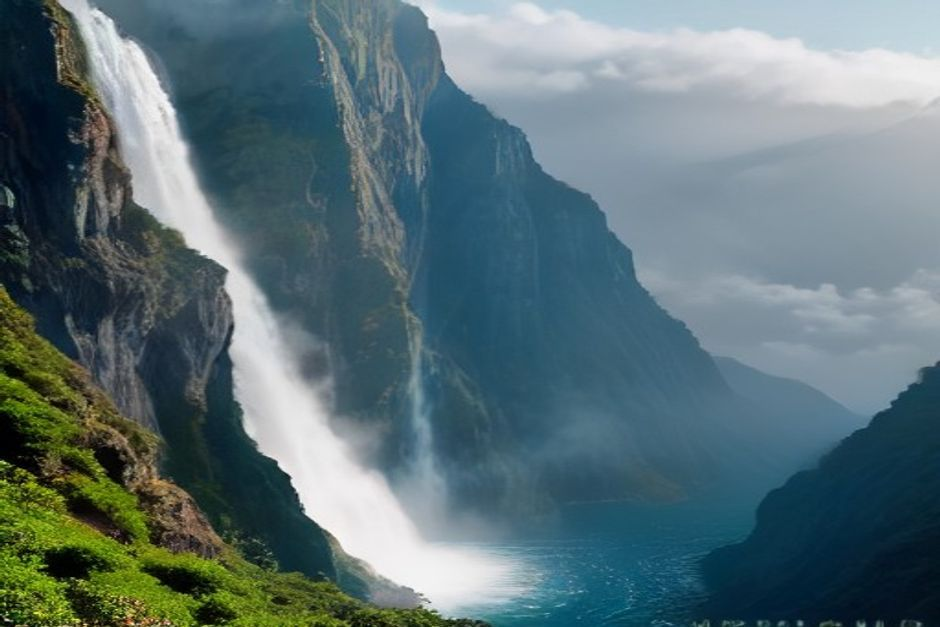
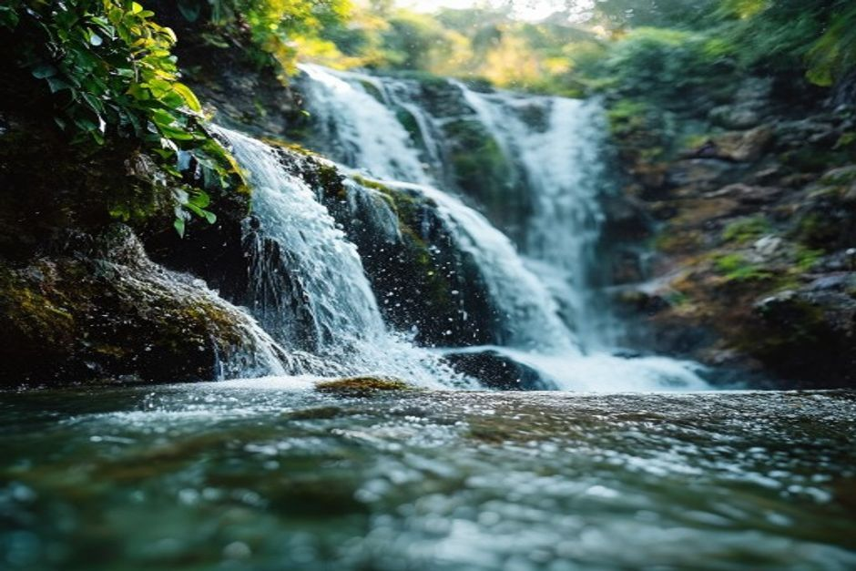

Madeira's interior gets some of the heaviest rainfall in Portugal, and centuries of levadas built to carry that water to the coast have left waterfalls at almost every turn — from a hundred-metre curtain falling into a laurel-forest lagoon to a roadside cascade you can drive straight through with the windows down. Here are the ten most worth going out of your way for, and exactly how to reach each one.
Does Madeira actually have proper waterfalls?
Yes — more than most visitors expect from a Portuguese island. The mountainous interior traps Atlantic moisture year-round, feeding streams that drop fast off basalt cliffs into laurel forest gorges, and the island's historic levada channels were built specifically to move that water from source to farmland. The result is a genuinely dense cluster of named waterfalls, several of them among the most photographed spots on the island.

1. Risco Waterfall, Rabaçal
Risco is Madeira's most iconic waterfall — a single, roughly 100-metre ribbon dropping down a moss-covered cliff face into the Rabaçal valley. It's reached via the Levada do Risco, a flat, easy 30-40 minute walk each way from the Rabaçal car park, making it one of the tallest falls on the island with one of the shortest approaches.
2. Lagoa do Vento, Rabaçal
A short continuation past Risco on the same trail network leads to Lagoa do Vento, a smaller cascade feeding a natural pool tucked into a narrow gorge. Pairing the two makes for one of the best waterfall double-headers on the island in a single half-day walk.
3. 25 Fontes, Rabaçal
Rather than one waterfall, 25 Fontes is a natural amphitheatre where dozens of small springs and cascades trickle down mossy basalt walls into a single lagoon. It shares its trailhead with Risco, so most visitors walk both in one outing — roughly three hours round trip from Rabaçal.
4. Caldeirão Verde, Santana
At the end of the PR9 trail from Queimadas Forest Park, Caldeirão Verde ("green cauldron") drops about 100 metres into a small natural pool ringed by cliffs and laurel forest, crossed on the way by narrow tunnels cut through the rock by 19th-century levada builders. It's a longer commitment than Rabaçal's falls — around 13km round trip — but widely rated Madeira's most dramatic waterfall setting.
5. Véu da Noiva, Seixal
Bridal Veil falls about 30 metres straight down volcanic cliffs into the Atlantic on the north coast near Seixal, and it's one of the easiest waterfalls in Madeira to see — visible from a roadside viewpoint right next to the car park, no walk required. It's a natural stop on any north coast road trip.
6. Cascata dos Anjos, Ponta do Sol
Madeira's most unusual waterfall pours directly over the old coastal road between Ponta do Sol and Madalena do Mar, so you can pull the car over and walk straight through it. It's less a hike than a roadside shower, and one of the most-photographed few minutes on the south coast.
7. Água d'Alto, Faial
Also known locally as Cascata do Faial, this roughly 30-metre waterfall on the Ribeira do Faial drops into a clear pool in the forest near Faial, on the north coast close to Santana. The walk in is short, around 3km round trip with little elevation change, making it one of the easier forest waterfalls to reach.
8. Levada do Rei waterfalls, São Vicente
Rather than one single fall, the Levada do Rei trail follows the Ribeiro Bonito through a narrowing, jungle-like gorge lined with several smaller cascades, ending at an atmospheric rock amphitheatre. At around 9.8km round trip it's a longer, quieter alternative to the busier Rabaçal and Santana trails.
9. Garganta Funda, Ponta do Pargo
Tucked into the Pedregal area near Ponta do Pargo on the wild west coast, Garganta Funda is one of Madeira's lesser-visited waterfalls precisely because it sits furthest from Funchal. It rewards the drive with a narrow, steep-sided gorge that sees a fraction of the crowds at the island's better-known falls.

10. Fajã da Nogueira, central mountains
Starting at the old Central Elétrica da Fajã da Nogueira near Ribeiro Frio, this loop trail threads narrow paths and hand-cut tunnels along a levada, passing directly under several waterfalls tumbling into the canyon below. It's one of the more adventurous entries on this list — bring a torch for the tunnels.
Do you need to book or pay to see them?
The two busiest routes — Risco/25 Fontes and Caldeirão Verde — now sit under Madeira's SIMplifica reservation system, a free timed booking plus a small entry fee introduced to manage overcrowding on the island's most popular levada trails. Roadside waterfalls like Véu da Noiva and Cascata dos Anjos need no booking and cost nothing to see.
Madeira's waterfalls aren't a detour from the island — for a lot of the interior, they're the whole reason to go.
Chasing waterfalls inland means hours on mountain roads and levada paths, which is exactly why the coast makes such a good second half to the trip. A private boat trip from Funchal swaps moss and mist for flat Atlantic water, a swim in a hidden cove, and — with a bit of luck — dolphins riding the bow on the way back in.